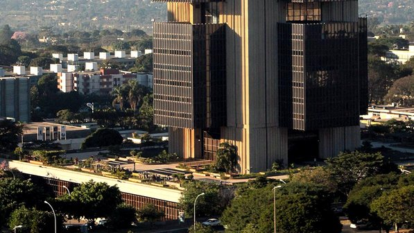

O empresário brasileiro Eike Batista é o 28º homem mais rico do mundo, de acordo com levantamento inédito com 200 nomes da revista Bloomberg que será divulgado na edição de dezembro da publicação. Em março, o empresário foi ranqueado como o 7º mais rico pela revista Forbes, mas em junho ele já estaria na 46ª posição da mesma lista.
O bilionário mexicano Carlos Slim, presidente da America Movil, com uma fortuna de US$ 77,5 bilhões é o homem mais rico, de acordo com o levantamento. Dentre os cinco primeiros estão também Bill Gates e Warren Buffett. O presidente do Facebook, Mark Zuckerberg, que tem uma fortuna de cerca de US$ 6,8 bilhões, é apenas rico o suficiente para ficar na 88ª posição.
Segundo a publicação, um dos destaques ficou por conta do espanhol Amancio Ortega, que ficou na 3ª colocação. O homem de 76 anos é fundador da maior varejista do mundo, a Inditex SA, que é conhecida por suas 1.600 lojas de moda Zara. Ele fez cerca de US$ 18 bilhões do início do ano até o dia 05 de outubro - ou cerca de US$ 66 milhões por dia.
Dentre os 25 mais ricos, nove são magnatas do varejo. Entre eles está o dono da Ikea, Ingvar Kamprad, e quatro membros da família Walton, que controla o Wal-Mart, além de Stefan Persson, o maior acionista da sueca de roupas Hennes & Mauritz AB.
A revista destacou ainda 30 bilionários "ocultos" este ano. A brasileira Dirce Navarro de Camargo herdou o conglomerado industrial de seu falecido marido, a Camargo Correa SA, em 1994. Elaine Tettemer Marshall controla 15% da Koch Industries Inc., a segunda maior empresa de capital fechado os EUA, e tem uma fortuna de US$ 12 bilhões, a mesma de Dirce. Os bilhões das duas mulheres ainda parecem pouco perto da fortuna de Gina Rinehart, a mulher mais rica na região da Ásia-Pacífico, que está brigando com seus filhos pelo império da família de US$ 19,1 bilhões.

A economia brasileira vai crescer mais de 4% no quatro trimestre de 2012 na comparação com o mesmo período do ano passado, afirmou o diretor de Assuntos Internacionais do Banco Central, Luiz Awazu Pereira da Silva, nesta segunda-feira.
"Após crescer 2,7% em 2011, a economia vai se expandir mais de 4%" no quatro trimestre do ano, afirmou em discurso, referindo-se ao Produto Interno Bruto (PIB). O diretor discursou em um seminário sobre fluxo de capital em Mumbai organizado pelo banco central da Índia e o Banco de Desenvolvimento Asiático.
No acumulado do terceiro trimestre, o Índice de Atividade Econômica do BC (IBC-Br), considerado uma prévia do PIB brasileiro, somou alta de 1,15%, resultado superior ao visto no segundo trimestre do ano, de 0,6%. Na comparação com o mesmo mês do ano anterior, o IBC-Br avançou em setembro 2,39% e, em 12 meses, acumula alta de 0,98%, de acordo com o BC.
Contudo, a expectativa do mercado financeiro não é tão otimista. Economistas ouvidos pelo Banco Central (BC) para o relatório Focus desta segunda-feira rebaixaram sua expectativa média para o PIB brasileiro este ano e ano que vem, passando-a de 4,54% para 1,52% em 2012 e de 4% para 3,96% em 2013.